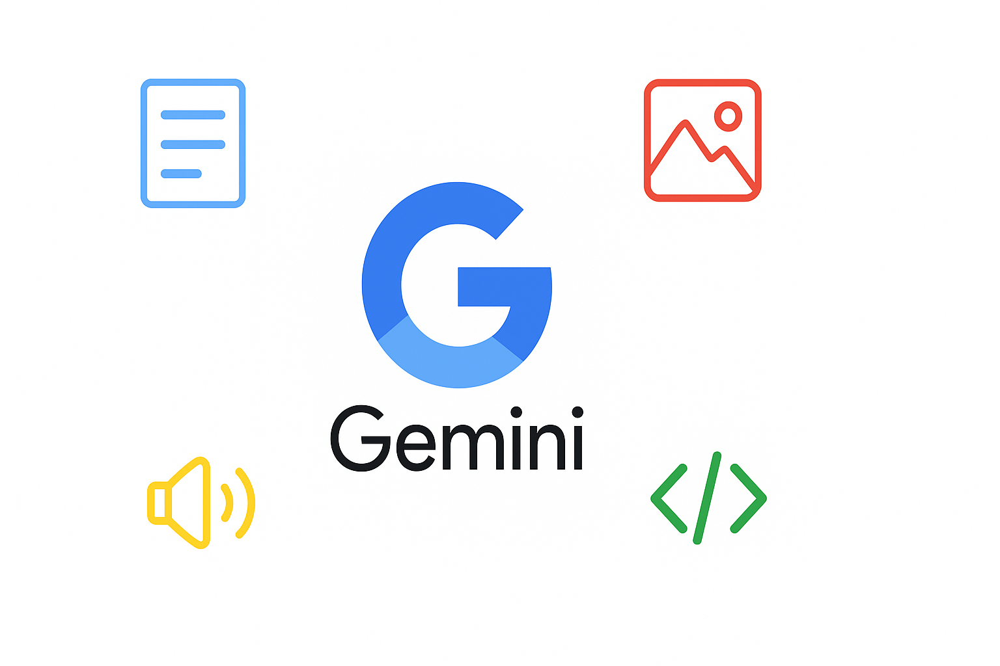

How to Use Gemini AI: A Quick Start Guide for Beginners (2025)
Last Updated: May 2, 2025
You've likely encountered Google's powerful AI, Gemini. It's making waves for its ability to understand not just text, but also images, audio, and even video! This makes it different from many other AI chatbots you might have heard of, like ChatGPT. But what does "multimodal" really mean for a beginner, and how do you even start using Gemini?
If you're curious about Google's AI but feel a bit lost, you're in the right place. This guide is designed to give you a quick, simple introduction to Gemini AI. We'll skip the complex jargon and show you exactly how to access Gemini, have your first conversations (with text and images!), and understand its basic capabilities. By the end of this short guide, you'll be comfortable using Google's versatile AI assistant.
Want to truly master Gemini's capabilities, from advanced image analysis to leveraging its Google ecosystem integrations? Download our FREE Ultimate Gemini AI Guide – packed with in-depth examples, prompt strategies, and troubleshooting tips! [Link to Landing Page Placeholder]
What Exactly IS Gemini AI? (Simplified)
Think of Gemini AI as Google's answer to advanced AI assistants. Developed by Google AI, it's not just one model but a family designed for different tasks (you might hear names like Nano, Pro, and Ultra). What makes Gemini stand out is its multimodal nature, meaning it was built from the start to understand and work with different types of information simultaneously – text, images, audio, video, and code.
While other AIs might have image capabilities added on, Gemini is designed to process and reason across these different "modes" more naturally. For a beginner, this means you can ask Gemini questions about pictures, get explanations of diagrams, or even combine text and images in your prompts.
Compared to something like ChatGPT, Gemini often has tighter integration with Google's other services (like Search, Maps, and Workspace) and potentially more up-to-date information because of its connection to Google Search. Its core abilities include:
- Answering questions on a vast range of topics.
- Generating text (emails, summaries, creative content, code).
- Understanding and describing images you upload.
- Reasoning based on combined text and image input.
- Integrating with Google apps for tasks like planning trips or summarizing emails (often via "Extensions").
Getting Started: Accessing Gemini
Accessing Gemini is straightforward, especially if you already use Google services.
Finding Gemini on the Web
The easiest way to start is through the dedicated Gemini web application:
- Go to the website: https://gemini.google.com/
- Sign In: You'll need to sign in with your existing Google Account (the same one you use for Gmail, Google Drive, etc.). If you don't have one, you'll need to create one first.
Once logged in, you'll see the main interface.
The Interface
The Gemini web interface is clean and user-friendly:
- Input Box: At the bottom, where you type your text prompts.
- Image Upload Icon: Usually near the input box (often a picture icon or paperclip), allowing you to add images to your prompt.
- Response Area: Where Gemini's answers appear.
- Sidebar/History: On the left, showing your previous chats and options to start a new one.
- Extensions/Settings: Options to manage connections to other Google apps might be accessible here or via your profile icon.
Mobile Access
You can often access Gemini on your phone through:
- The Google App: Gemini features are often integrated directly into the main Google search app.
- A Dedicated Gemini App: Google has rolled out standalone Gemini apps in some regions. Check your app store.
Mobile access is great for quickly asking questions or using your phone's camera to provide image input.
Your First Interactions with Gemini
Let's try talking to Gemini!
Basic Text Prompts
Start with simple questions or commands, just like you might with ChatGPT. Type these into the input box:
Explain the concept of blockchain in simple terms.Write a short poem about a rainy day.Give me 5 tips for improving my public speaking skills.What are the pros and cons of electric cars?
Trying Multimodal Input (Image Prompting Basics)
This is where Gemini shines! Find the image upload icon (it might look like a picture frame or paperclip) near the input box.
- Click the icon and select an image from your device.
- After the image uploads, type a related question or instruction in the input box.
Try these examples:
- Upload a picture of your pet:
What breed does my dog look like? - Upload a photo of a meal:
Can you estimate the calories in this meal? - Upload a screenshot of an error message:
What does this error message mean and how can I fix it? - Upload a picture of a flower:
Identify this flower.
Understanding Responses
Gemini's responses might include text, links (often from Google Search for verification), or even images generated in response. Look for options to view "other drafts" if you want alternative answers, or simply ask Gemini to modify its response in a follow-up prompt.
Basic Tips for Better Gemini Results
Get more out of Gemini with these simple tips:
Be Clear and Contextual
Provide details! Instead of Tell me about Rome, try Plan a 3-day itinerary for Rome focusing on ancient history sites.
Leverage Multimodality
Don't forget the image input! If your question relates to something visual, upload a picture along with your text prompt for a potentially richer answer.
Ask Follow-Up Questions
Refine the conversation. Ask Gemini to elaborate, simplify, change the tone, or consider different aspects.
Use Google Integration (Extensions)
If you see options for Extensions (like Workspace, Maps, Flights), enable them if you're comfortable. This allows Gemini to pull in real-time information for tasks like summarizing recent emails or finding flight options.
Know Its Limits
Like all AI, Gemini can make mistakes ("hallucinate"). Always double-check important information, especially facts, figures, or advice related to health, finance, or safety. Use the Google Search integration (if offered) to help verify answers.
Gemini vs. Other AI (Brief Comparison)
How does Gemini stack up against something like ChatGPT for a beginner?
Placeholder: Gemini vs. ChatGPT Quick Comparison
| Feature | Gemini (Typical Free Access) | ChatGPT (Typical Free Access) |
|---|---|---|
| Core Strength | Multimodal (Text, Image, etc.) | Conversational Text |
| Image Input | Yes (Native) | Sometimes (Via Paid/GPT-4) |
| Real-time Info | Often via Google Search integration | Limited (Browsing often paid) |
| Ecosystem | Deep Google Integration (Workspace, etc.) | Broader Plugins (Often paid) |
In short: Gemini excels when dealing with images or needing integration with Google services. ChatGPT is renowned for its strong conversational abilities with text.
What About Different Gemini Versions? (Simplified)
Google offers different Gemini models. When you use the free web interface (gemini.google.com), you're typically interacting with Gemini Pro, which is very capable for most everyday tasks.
Google also offers a paid subscription (often called Gemini Advanced) which gives access to their most powerful model, Gemini Ultra. Ultra is designed for highly complex tasks requiring deeper reasoning, better coding skills, and more nuanced understanding. There's also Gemini Nano, designed to run efficiently directly on some mobile devices for specific features.
For beginners: Stick with the free Gemini Pro access first. It's powerful enough for learning and exploration. Consider Gemini Advanced only if you need top-tier performance for very complex tasks.
Go Deeper with Gemini!
Mastered the basics? Unlock advanced multimodal prompting, explore 50+ real-world use cases, and get exclusive troubleshooting tips. **Download our FREE Ultimate Gemini AI Guide now!** [Link to Landing Page Placeholder]
Conclusion: Your Multimodal AI Assistant
You've successfully taken your first steps with Google's Gemini AI! You now know how to access it, interact using both text and images, and understand its core strengths, particularly its multimodal capabilities and Google integration. Gemini is a versatile tool that can assist with everything from answering questions to analyzing visuals.
The best way to become comfortable is through practice. Try uploading different images, ask complex questions, see how it integrates with other Google tools you use, and experiment with its creative potential. Welcome to the world of multimodal AI!
Quick FAQ
Yes, Google offers free access to a powerful version of Gemini (usually Gemini Pro) through its website (gemini.google.com) and integrations like the Google App. There is also a paid subscription (Gemini Advanced) for access to the most powerful model (Gemini Ultra).
Google Search finds and ranks existing web pages. Gemini generates new content, answers questions conversationally, analyzes images, and performs tasks based on its training and real-time information (often pulled via Search). Think of Search as finding information and Gemini as understanding, creating, and interacting with it.
Yes, this is a core strength of Gemini. You can upload an image and ask questions about it in the same prompt, allowing it to reason across both types of information.
No, you just need a standard Google Account (the same one you use for Gmail, YouTube, etc.) to access the free version of Gemini.
Neither is definitively "better"; they have different strengths. Gemini excels at multimodal tasks (understanding images) and integrating with Google services. ChatGPT is often praised for its strong conversational flow and creative text generation. The best choice depends on your specific needs.